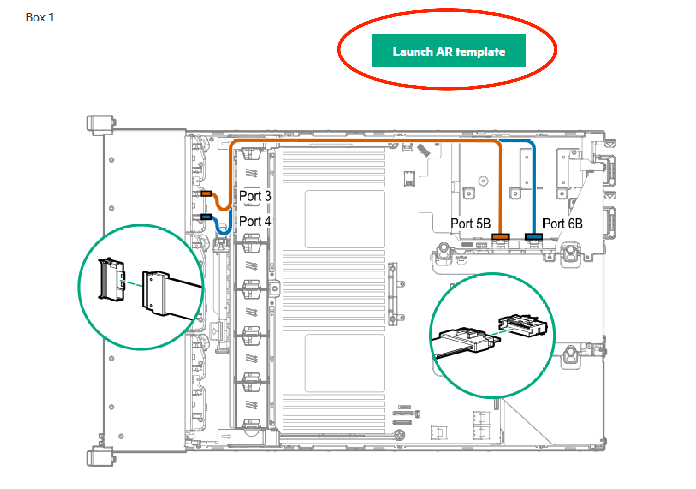

How to use augmented reality cabling templates
Some cabling diagrams provide access to an augmented reality (AR) template. You can hold the template over the server to verify cabling and cable routing.
Procedure- Hold your device in landscape mode.
Click the Launch AR template button above the cabling diagram.

The device's back camera is activated and the AR template appears on the screen.
To view the AR template full screen, swipe up on the image to hide the browser controls.
- To view the AR template full screen, swipe up on the image to hide the browser controls.
- Hold the template over the server aligning the AR diagram to the server.